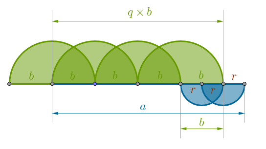
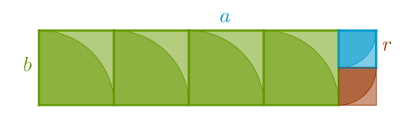

1) Prerequisites
2) Initial Observations
3) GCD
4) Some Commonality
5) Why Does It Always Terminate?
6) No Commonality
7) Interpretations
8) Code
1) Prerequisites
To derive the most benefit from this tutorial the reader should feel comfortable with prime numbers, the building blocks of all other numbers, the Prime Factorization Theorem, or PFT, and the Division Algorithm.
Prime numbers, or just primes, are natural numbers strictly greater than \(1\) that have no positive divisors other than \(1\) and themselves. For example, the following numbers are all prime:
$$2, 3, 5, 7, 11, 13, 17, 19, 23, 29$$Numbers that are not prime are called composite numbers or just composites. We observe in passing that \(2\) is the only even prime; the number \(1\) is not a prime; the number of primes is infinite as was proven by Euclid via the "product of all primes plus one" argument ("Elements", Book 9 Proposition 20).
The Prime Factorization Theorem, or PFT for short, also known as Fundamental Theorem of Arithmetic, states that any natural number \(n > 1\) is either prime already or has a unique factorization over primes if the order of factors is ignored. For example, a composite number \(30\) has the following factorization over primes:
$$30 = 2 \cdot 3 \cdot 5$$Multiple like prime factors may either be kept expanded or collected under one power in which case the exponential notation is used to record this particular factorization:
$$540 = 2 \cdot 2 \cdot 3 \cdot 3 \cdot 3 \cdot 5 = 2^2 \cdot 3^3 \cdot 5$$The Division Algorithm states that for any two given integers \(n\) and \(d\), where \(d > 0\), there exist unique integers \(q\) and \(r\) such that:
$$n = qd + r, 0 \leqslant r < b$$The integers \(n, d, q\) and \(r\) are called the dividend, divisor, quotient and remainder respectively. From now on, to eliminate the repetitive remarks, we will take it as given that any divisor under discussion is not equal to zero.
For example, for \(a = 38\) and \(b = 7\):
$$38 = 5 \cdot 7 + 3, q = 5, r = 3$$Do not overlook the facts that \(r\) is non-negative and strictly less than \(b\) as these facts are of importance.
2) Initial Observations
In this tutorial we will concentrate on the intuitive side of the material - the one that is frequently omitted from the textbooks. It should be remembered, however, that the sole reliance on intuition in mathematics may lead to mistakes - the harsh reality of formalism must be faced sooner or later.
We have skimmed through or possibly even read the Euclidean GCD-computing Algorithm with a reasonable degree of attention and effort but it all seems clear as mud. All these subscripts and all these repetitive steps look incomprehensible.
When we come across a poorly understood or confusing material we have only two choices - walk away or persevere. If we choose to persevere then we need some sort of strategy to attack the problem. What follows is just a way, not a template, to attempt to untangle a (seemingly) messy issue.
Our angle of attack: create our own empirical evidence - concrete examples, using data that we understand. If we feel comfortable with numbers and their manipulations then chances are high that we will succeed in figuring out what really is going on.
Since the algorithm in question is dealing with division and subtraction, do we really understand what a divisor is? By definition, an integer \(a\) is (evenly) divisible by an integer \(b \neq 0\), in symbols: \(b | a\), meaning \(b\) divides \(a\), if there exists some integer \(n\) such that:
$$\begin{equation} a = n \cdot b \end{equation}$$We observe that the above is just a convenient specific case of the Division Algorithm when \(r = 0\). For example, \(3\) (evenly) divides \(30\):
$$30 = 10 \cdot 3$$ $$a = 30, b = 3, n = 10$$and, in a multitude of allowable ways, we would say that:
- \(b\) divides \(a\)
- \(b\) is a divisor of \(a\)
- \(b\) is a factor of \(a\)
- \(a\) is a multiple of \(b\)
It follows then that if \(a\) is divisible by \(b\) then \(a\) is also divisible by \(-b\) which means that the divisors of an integer always come in pairs. To obtain all the divisors of a given integer it is enough to find all the positive ones and add to them thier negative equivalents. For this reason, without the loss of generality, we can safely limit ourselves to considering only positive divisors in particular and positive integers in general.
Since our algorithm deals with a specific type of commonality between two numbers, how about a different number with the same, or common, or shared, factor of \(3\):
$$21 = 3 \cdot 7$$Now we start asking questions: if we add two such numbers together then what can be said about their common factor with respect to their sum? Let us see:
$$30 + 21 = 3 \cdot 10 + 3 \cdot 7 = 3 \cdot (10 + 7)$$Hm, we remember that integers are closed under addition - an arithmetic sum of a finite number of integers will always be an integer! Hence, we can rewrite the above as:
$$30 + 21 = 51 = a = 3 \cdot b, b = 10 + 7$$But the last equation looks exactly like (\(1\)) since:
$$a, b \in \mathbb{Z}$$Hence, we conclude that a common factor of two integers also divides their sum. This gives us the courage to switch from empirical and inductive to theoretical and deductive and conclude that for chosen integers \(a, b, f\):
if \(f | a\) and \(f | b\) then \(f | (a + b)\)
Proof: if \(f | a\) then:
$$a = f \cdot n_a$$and if \(f | b\) then:
$$b = f \cdot n_b$$and hence:
$$a + b = f \cdot n_a + f \cdot n_b = f \cdot (n_a + n_b)$$ $$(a + b) \in \mathbb{Z}$$ $$(n_a + n_b) \in \mathbb{Z}$$\(\square\)
In our concrete example we had \(f = 3, n_a = 10, n_b = 7\) and we can say that a common factor of two integers remains invariant under the operation of arithmetic summation of these integers.
What about a difference of two integers?
$$30 - 21 = 3 \cdot 10 - 3 \cdot 7 = 3 \cdot (10 - 7)$$Here we recall that integers (not natural numbers, careful!) are closed under subtraction:
$$30 - 21 = 9 = a = 3 \cdot b, b = 10 - 7$$ $$a, b \in \mathbb{Z}$$and we conclude that a common factor of two integers also divides their difference. Switching from empirical and inductive to theoretical and deductive we obtain for chosen integers \(a, b, f\):
if \(f | a\) and \(f | b\) then \(f | (a - b)\)
Proof: if \(f | a\) then:
$$a = f \cdot n_a$$and if \(f | b\) then:
$$b = f \cdot n_b$$and hence:
$$a - b = f \cdot n_a - f \cdot n_b = f \cdot (n_a - n_b)$$ $$(a - b) \in \mathbb{Z}$$ $$(n_a - n_b) \in \mathbb{Z}$$\(\square\)
We can also say that a common factor of two integers is invariant under the operation of subtraction of these integers. For future reference let us name this the D-Theorem, for difference.
Armed with success, we now get brave and ambitious and ask: what about an arbitrary linear combination of two integers?
$$30 \cdot 4 + 21 \cdot 5 = 3 \cdot 10 \cdot 4 + 3 \cdot 7 \cdot 5 = 3 \cdot ( 10 \cdot 4 + 7 \cdot 5 )$$Since integers are closed under multiplication also, it follows that the mathematical objects on both sides of the above equation are integers:
$$(30 \cdot 4 + 21 \cdot 5) \in \mathbb{Z}$$ $$(10 \cdot 4 + 7 \cdot 5 ) \in \mathbb{Z}$$We see that a common factor of two integers also divides their arbitrary linear combination or remains invariant with respect to the operation of constructing their arbitrary linear combination. For chosen integers \(a, b, f\):
if \(f | a\) and \(f | b\) then \(f | (ax + by)\) for any integers \(x\) and \(y\)
Proof: if \(f | a\) then:
$$a = f n_a$$and if \(f | b\) then:
$$b = f n_b$$and hence, for any integers \(x\) and \(y\) we have:
$$ax + by = f n_a x + f n_b y = f (n_a x + n_b y)$$ $$(a x + b y) \in \mathbb{Z}$$ $$(n_a x + n_b y) \in \mathbb{Z}$$\(\square\)
For later reference let us call the above - the LC-Theorem, for Linear Combination.
Before we move on, let us get a good handle on exactly what a GCD, the subject of our computational search, is.
3) GCD
A standard, textbook, definition of GCD is the following: it is a strictly positive number \(d\) that divides both integers \(a\) and \(b\), at least one of which is not zero, and if there exists any other common factor of \(a\) and \(b\) then that factor is not greater than \(d\). In symbols: \(d > 0\), \(d | a\) and \(d | b\) and if \(c | a\) and \(c | b\) then \(c \leqslant d\).
The reason we require that at least one of two integers is not zero is to avoid dealing with infinitude of potential divisors. If both integers are zero then, since any integer divides zero, the number of divisors of two such integers will be infinite. If, on the other hand, at least one integer is not zero then the number of common divisors becomes finite, we can sort these divisors in an ascending order and the last such divisor will be the greatest one. It follows then that:
$$gcd(a, 0) = a$$a fact used in the Euclidean GCD Algorithm.
It is often the case in mathematics that a definition of an object provides no clues to its construction or computation. As such, the definition above is certainly one of those - it tells us what GCD is but gives no recipe for its computation.
One initially intuitive way to compute a GCD is as follows: factorize \(a\) over primes and put the resulting prime factors into a multiset \(A\). Factorize \(b\) over primes and put the corresponding prime factors into a multiset \(B\). Take the intersection of \(A\) and \(B\) and multiply through all the numbers in it. For example:
$$a = 525 = 3 \cdot 5 \cdot 5 \cdot 7$$ $$A = \{3, 5, 5, 7\}$$ $$b = 60 = 2 \cdot 2 \cdot 3 \cdot 5$$ $$B = \{2, 2, 3, 5\}$$ $$A \cap B = \{3, 5\}$$ $$gcd( 525, 60 ) = 3 \cdot 5 = 15$$(recall that multisets are sets, or collections, of items where duplicates are allowed)
If it so happens that the intersection of two multisets in question is empty then we take it that number \(1\) is the only common factor of two integers, in symbols:
$$gcd(a, b) = 1$$in which case the numbers are called coprime or relatively prime. Observe that two composites can very well be coprime:
$$a = 77 = 7 \cdot 11$$ $$A = \{7, 11\}$$ $$b = 18 = 2 \cdot 3 \cdot 3$$ $$B = \{2, 3, 3\}$$ $$A \cap B = \emptyset$$The integers above do not share any common prime factors and hence:
$$gcd(77, 18) = 1$$Now that we have a way of computing a GCD of two integers, let us begin our investigation of the inner workings of the Euclidean GCD Algorithm with two integers that have some number of common prime factors.
4) Some Commonality
Our naive way of computing a GCD may work reasonably well when the integers are small and we can figure out their prime factors quickly. For large numbers, however, our algorithm becomes impractical quickly because prime factorization of such numbers takes too long. As such, we seek a faster way to compute a GCD of two integers and the Euclidean Algorithm is one answer.
Since the algorithm in question deals with subtraction, let us construct the simplest possible differences of two integers, \(a = 525\) and \(b = 60\), by always subtracting a smaller number from a larger one. Why this is useful will become clear soon:
$$\begin{array}{rcrcr} 525 & - & 60 & = & 465 \\ 465 & - & 60 & = & 405 \\ 405 & - & 60 & = & 345 \\ 345 & - & 60 & = & 285 \\ 285 & - & 60 & = & 225 \\ 225 & - & 60 & = & 165 \\ 165 & - & 60 & = & 105 \\ 105 & - & 60 & = & 45 \\ \end{array}$$If we were to blindly proceed at this stage then the next difference would become negative:
$$45 - 60 = -15$$and all the consequent differences would remain negative also - we know that \(\mathbb{Z}\) has neither upper nor lower bounds. For any finite positive integer we can always produce one larger and for any finite negative integer we can always produce one smaller. Hence, our process would go on forever and will never terminate. We, on the contrary, want to find a process that is guaranteed to terminate in a finite number of steps.
In order to ensure that our procedure "converges" in such a fashion - terminates after a finite number of steps - let us perform the following substitutions:
- promote the "old" integer \(b = 60\) to become a "new" integer \(a\)
- promote the "old" difference (\(45\)) to become the "new" integer \(b\):
$$a = 60, b = 45$$ $$60 - 45 = 15$$We see that the new integer \(b = 45\) is greater than the difference, \(15\), so we perform the same substitutions (promotions) again:
$$a = 45, b = 15$$ $$45 - 15 = 30$$We see that this time the difference, \(30\), is greater than current magnitude of \(b\), so we carry out the subtraction without any promotions:
$$30 - 15 = 15$$And finally:
$$15 - 15 = 0$$When the above difference becomes zero - our procedure terminates and, according to the Euclidean GCD Algorithm, the GCD in question is the last non-zero remainder:
$$gcd(525,60)=15$$We now ask the next question: did we just get lucky or, as long as we follow the above procedure, the difference will always become zero (after a finite number of steps)? We try more different cases and see that they all work. Why?
One bright idea that may illuminate the situation is the following - let us factorize our differences over primes:
$$\begin{array}{rcrcrcl} 525 & - & 60 & = & 465 & = & (3 \cdot 5) \cdot 31 \\ 465 & - & 60 & = & 405 & = & 3 \cdot 3 \cdot 3 \cdot (3 \cdot 5) \\ 405 & - & 60 & = & 345 & = & (3 \cdot 5) \cdot 23 \\ 345 & - & 60 & = & 285 & = & (3 \cdot 5) \cdot 19 \\ 285 & - & 60 & = & 225 & = & 3 \cdot (3 \cdot 5) \cdot 5 \\ 225 & - & 60 & = & 165 & = & (3 \cdot 5) \cdot 11 \\ 165 & - & 60 & = & 105 & = & (3 \cdot 5) \cdot 7 \\ 105 & - & 60 & = & 45 & = & 3 \cdot (3 \cdot 5) \\ 60 & - & 45 & = & 15 & = & (3 \cdot 5) \\ 45 & - & 15 & = & 30 & = & 2 \cdot (3 \cdot 5) \\ 30 & - & 15 & = & 15 & = & (3 \cdot 5) \\ 15 & - & 15 & = & 0 \\ \end{array}$$We now observe something quite remarkable: the GCD of two integers in question seems to travel through all the differences and survive them all! What is going on here?
Intuitively we may reason as follows. Let us, for a moment, call a GCD a commonality between two given numbers. Recall that to even begin thinking about a GCD we must have at least two numbers - a GCD of a single integer makes no sense. So when we fix two integers, \(525\) and \(60\) for example, we automatically seal the fate of their commonality.
To compute the amount of this commonality in one number with respect to the other, we can multiply all the prime factors of the integer that are not GCD - do realize that at this point we are assuming that we know what the GCD actually is:
$$525 = (3 \cdot 5) \cdot 5 \cdot 7 = 35 \cdot (3 \cdot 5)$$ $$60 = 2 \cdot 2 \cdot (3 \cdot 5) = 4 \cdot (3 \cdot 5)$$In this case there are \(35\) units of commonality in \(525\) with respect to \(60\) and there are \(4\) units of commonality in \(60\) with respect to \(525\). How do we extract the magnitude of that commonality assuming that we do not know it? By constructing and computing the consecutive differences.
Recall that our first difference in the series:
$$525 - 60 = 465 = (3 \cdot 5) \cdot 31$$produced a smaller magnitude that had \(31\) units of commonality (with respect to both numbers \(a\) and \(b\)) and we now understand why. If we recall our D-Theorem that we proved earlier then it should be clear that even though the GCD is the largest common factor - it is still a common factor of two integers and the D-Theorem is applicable to it in equal measure. As such, we are guaranteed that the magnitude of the GCD in question is preserved in the above difference.
The next difference produced a magnitude that had \(27\) units of commonality:
$$465 - 60 = 405 = 27 \cdot (3 \cdot 5)$$but the same logic is applicable to that difference as well and we are guaranteed that it also carries the magnitude of the GCD in question unmolested. And so on. Eventually we came to the difference that held less units of commonality between \(525\) and \(60\) than the smallest original or current integer \(b\):
$$105 - 60 = 45 = 3 \cdot (3 \cdot 5) < 4 \cdot (3 \cdot 5) = 60$$However, we see that regardless of the length of the chain of consecutive subtractions, the numbers \(60\) and \(45\) do possess the original commonality, the GCD in question, nonetheless. So all we need to do now is to ensure that we keep subtracting a smaller number from the larger one by switching the roles that the original numbers \(a = 525\) and \(b = 60\) played earlier and applying the same logic and process to the new \(a = 60\) and the new \(b = 45\):
$$60 - 45 = 15 = 1 \cdot (3 \cdot 5)$$We see that:
$$15 = 1 \cdot (3 \cdot 5) < 3 \cdot (3 \cdot 5) = 45$$so we substitute/promote/switch the numbers \(a\) and \(b\) again:
$$a = 45, b = 15$$ $$45 - 15 = 30 = 2 \cdot (3 \cdot 5)$$and again until we reach the difference that is exactly zero:
$$30 - 15 = 15 = (3 \cdot 5)$$ $$15 - 15 = 0$$at which point, according to the algorithm, we take the last non-zero difference and claim that it is the GCD in question:
$$gcd(525, 60) = 15$$In a modernized language that is what Euclid did in his "Elements", Book 7 Proposition 2.
The last thing that remains for us to do is to realize that the chain of consecutive subtractions is none other than the Division Algorithm in the expanded form. So if we compress our steps and compute the remainders of division of the larger number by the smaller one until zero remainder is reached, we will arrive at the modern form of the Euclidean GCD Algorithm:
$$\begin{array}{rcrcrcl} 525 & - & 8 \cdot 60 & = & 45 & = & 3 \cdot (3 \cdot 5) \\ 60 & - & 1 \cdot 45 & = & 15 & = & (3 \cdot 5) \\ 45 & - & 3 \cdot 15 & = & 0 \\ \end{array}$$where, in the intermediate steps, we repetitively promoted the old \(b\) into the new \(a\) and the old \(r\) into the new \(b\).
And in the modern setting, after all the work that we have done so far, we should have no trouble proving rigorously that our earlier intuitive thinking is in fact mathematically correct:
If \(d\) is a GCD of two integers \(a\) and \(b\), then, being their common factor, according to our LC-Theorem, \(d\) divides their arbitrary linear combination, including this one:
$$a - q \cdot b = r$$But the above linear combination yields \(r\) - the remainder of division of \(a\) by \(b\) - according to the Division Algorithm. Hence, \(d\) also divides both \(b\) and \(r\). Conversely, if \(f\) is some arbitrary common factor of \(b\) and \(r\) then it too, according to the LC-Theorem, must divide their arbitrary linear combination, including this one:
$$r + q \cdot b = a$$But the above linear combination yields \(a\) and, hence, \(f\) also divides both \(a\) and \(b\). But according to the GCD definition, \(f \leqslant d\), which means that indeed \(d\) is a GCD of \(b\) and \(r\) also.
In our example:
$$gcd(525, 60) = 15$$ $$525 - 8 \cdot 60 = 45 = r$$ $$gcd(60, 45) = 15 = gcd(525, 60)$$So in fact we went through the following GCD chain:
$$gcd(525, 60) = gcd(60, 45) = gcd(45, 15) = gcd( 15, 0) = 15$$
5) Why Does It Always Terminate?
There are three factors that contribute to the fact that the Euclidean GCD Algorithm always terminates:
5.1) the algorithm only deals with whole numbers at all times
5.2) \(b\) and the consecutive remainders \(r\) are strictly decreasing due to the Division Algorithm
5.3) there is a hard lower bound for the above numbers, zero, which means that since the distance between \(b\) and zero is finite then the set of all the remainders can not contain more than \(b\) items (integers) - a manifestation of well ordering of the natural numbers
We may also observe that a given pair of numbers is not special - the \((60, 45)\) pair, from the consecutive subtraction stand point, is no different than the \((45, 30)\) pair or the original \((525, 60)\) pair. The first two pairs of integers diminish in their respective magnitudes but nothing prevents us from going in the opposite direction and manufacturing thus related pairs of increasing magnitudes.
For example, the numbers that we now qualify as original, \(525\) and \(60\), may very well be interpreted as the intermediate terms in a different, and bigger, chain of a GCD computation of yet another pair of numbers. If we work our way in the opposite direction and demote the term \(b = 60\) to become \(r\) and demote the term \(a = 525\) to become \(b\) then we will have:
$$1635 - 3 \cdot 525 = 60$$ $$a = 1635, b = 525, r = 60$$where \(q = 3\) was pulled out of thin air. One more time:
$$3795 - 2 \cdot 1635 = 525$$ $$a = 3795, b = 1635, r = 525$$And so on. We see that if we demote \(b\) into \(r\) and \(a\) into \(b\) then, with some frivolity of choosing \(q\), we will generate non-unique pairs of magnitudes that increase without bound while if we promote \(b\) into \(a\) and \(r\) into \(b\) then we will produce unique pairs of strictly decreasing magnitudes.
6) No Commonality
We now should have no problems following the Euclidean GCD Algorithm when it is applied to two coprimes. For example:
$$a = 175 = 5 \cdot 5 \cdot 7$$ $$b = 22 = 2 \cdot 11$$ $$\begin{array}{rcrcrcl} 175 & - & 7 \cdot 22 & = & 21 & = & 3 \cdot 7 \\ 22 & - & 1 \cdot 21 & = & 1 & = & 1 \\ 21 & - & 21 \cdot 1 & = & 0 \end{array}$$ $$gcd(175, 22) = 1$$You are encouraged to perform the above canonical computation in an expanded, Euclidean, form of consecutive subtractions.
7) Interpretations
We can think of two pretty much identical interpretations of the Euclidean GCD Algorithm: one- and two-dimensional.
The one-dimensional interpretation is quite literal: we treat \(a, b\) and \(r\) as lengths of line segments. Between the two line segments \(a\) and \(b\) we always choose the shorter one, say \(b\), as a yard stick with which we measure the longer one, say \(a\), for as long as possible - until the leftover line segment \(r\), shorter than \(b\), remains:
at which point we carry out the following substitutions: turn the formerly shorter line segment \(b\) into the newly longer one \(a\) and make the line segment \(r\) be the new yard stick \(b\). Repeat the above process as long as the length of the leftover line segment \(r\) is not zero. The GCD in question then, by magnitude, is the length of the previous, nonzero length, line segment \(r\).
With the two-dimensional interpretation we treat \(a\) and \(b\) as the sides of a rectangle. The GCD in question then, by magnitude, is the largest possible side of a square that can tile, or cover, the given \(a \times b\) rectangle perfectly - without any gaps and without any overlaps.
Once the given \(a \times b\) rectangle is constructed, the process of finding of the above largest square uses the one-dimensional algorithm described earlier: we use the smaller side, say \(b\), to construct as many \(b \times b\) squares inside the original rectangle as possible. After \(q\) such squares tile the \(a \times b\) rectangle, a new, \(b \times r\), rectangle will remain not covered (here \(r = a - qb\)):
At which point we perform the familiar now substitution: we turn the old, smaller, side \(b\) into the new, longer, side \(a\) and we treat the, old, side \(r\) as a new, shorter, side \(b\). We now cover the new \(a \times b\), formerly \(b \times r\), rectangle with as many new \(b \times b\), formerly \(r \times r\), rectangles as possible until the current \(a \times b\) rectangle is covered by the \(b \times b\) square perfectly. The GCD in question, then, is equal to the length of the side of that last \(b \times b\) square.
8) Code
The following C code is supplied "as is" with absolutely no warranties of any kind:
gcd.c:
#include <stdio.h> #include <stdlib.h> extern int main( int argc, char *argv[] ) { int r; int a = atoi( argv[ 1 ] ); int b = atoi( argv[ 2 ] ); printf( "gcd(%d, %d) = ", a, b ); while ( b != 0 ) { r = a % b; /* a = qb + r */ a = b; /* Turn old 'b' into new 'a' */ b = r; /* Turn old 'r' into new 'b' */ } printf( "%d\n", a ); return 0; }
Build this program as follows:
gcc -g -o gcd gcd.c
And run it as follows:
./gcd 525 60 gcd(525, 60) = 15
\(\blacksquare\)